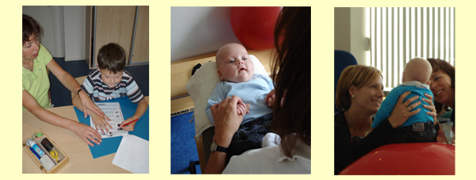

Wat doet de kinderfysiotherapeut:
Je leert in de opleiding een grote diversiteit aan oefenmethoden om problemen in het bewegend functioneren van kinderen te verbeteren.Van eenvoudige oefenmethoden om bijvoorbeeld de houding te verbeteren of schrijfmotoriek te beïnvloeden tot heel complexe oefenmethoden om het bewegen bij neurologische aandoeningen te verbeteren.
Daarnaast krijg je les in pathologie, orthopedie en neurologie en leer je veel over allerlei ziektebeelden.
De kinderfysiotherapeut gaat eerst het kind observeren en onderzoeken om een zo goed mogelijk beeld te krijgen van de motorische vaardigheden van het kind. Na het observeren of de motorische test is er een overleg met een of beide ouders.

Hieronder treft U voorbeelden van bewegingsproblemen of aandoeningen aan waarbij kinderfysiotherapie kan helpen om de ontwikkeling van het kind in positieve zin te beïnvloeden en dan met name waar het de motoriek of het bewegend functioneren betreft.
Kinderfysiotherapie bij baby, peuter en kleuter
Kinderfysiotherapie bij kinderen vanaf groep twee
Deze kinderen kunnen zich in eerste instantie melden bij de huisarts, die indien nodig kan doorverwijzen naar de kinderfysiotherapeut.
Maar ook de schoolarts of de consultatiebureauarts of de leerkrachten op school kunnen signaleren dat een kind door motorische problemen in zijn ontwikkeling belemmerd wordt.
De ouders kunnen ook rechtstreeks zonder verwijzing naar de kinderfysiotherapeut.
Na het consult of onderzoek volgt een overleg met de ouders en indien nodig behandeling.
Voor de medisch specialist kan het onderzoek en de behandeling van de kinderfysiotherapeut een aanvullende waarde hebben voor de diagnostiek en de totale behandeling, die bij ernstige aandoeningen vaak multidisciplinair is.
De kinderfysiotherapeut is dan betrokken bij overlegsituaties op revalidatiecentra of ziekenhuizen.
Als het kind bij een ernstige aandoening ook door andere zorgverleners wordt behandeld is er na toestemming van de ouders overleg met de andere zorgverleners.
Bij problemen met fijne motoriek en schrijven wordt er na toestemming door de ouders ook overlegd met de leerkracht.
|